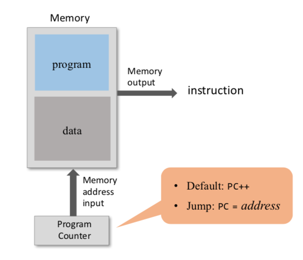
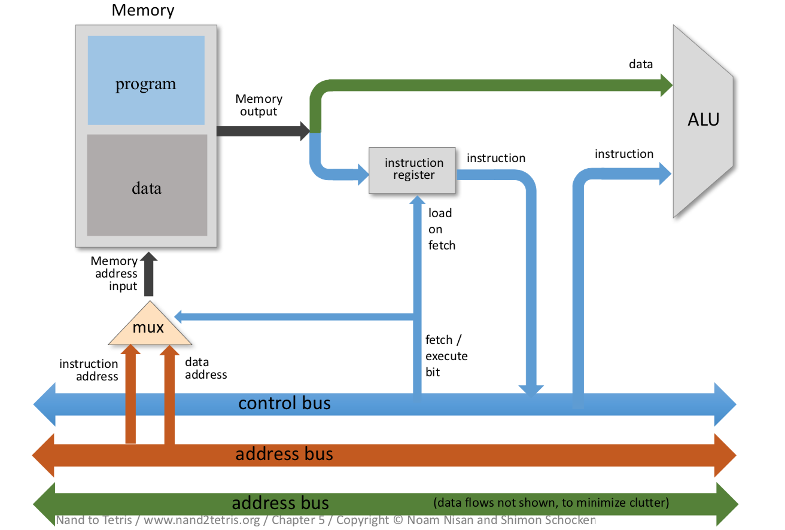

The CPU—the centerpiece of the computer’s architecture—is in charge of executing the instructions of the currently loaded program. The CPU executes these tasks using three main hardware elements: an Arithmetic-Logic Unit (ALU), a set of registers, and a control unit.
The CPU operation can be described as a repeated loop: decode the current instruction, execute it, figure out which instruction to execute next, fetch it, decode it, and so on. This process is sometimes referred to as the fetch-execute cycle.
1. Put the location of the next instruction in the Memory address input
2. Get the instruction code by reading the contents at that Memory location
-The instruction code specifies what to do
1. Which arithmetic or logical instruction to execute
2. Which memory address to access (for read / write)
3. If / where to jump
-Executing the instruction involves:
1. accessing registers
2. accessing the data memory.
perform all the low-level arithmetic and logical operations.
Any function not supported by the ALU as a primitive hardware operation can be later realized by the computer’s system software.
store the intermediate results(rather than ship them in and out of the CPU chip and store them in RAM chip).
typically equipped with a small set of 2 up to 32 resident high-speed registers, each capable of holding a single word.
decoded binary instructions.
signal various hardware devices (ALU, registers, memory) how to execute the instructions.